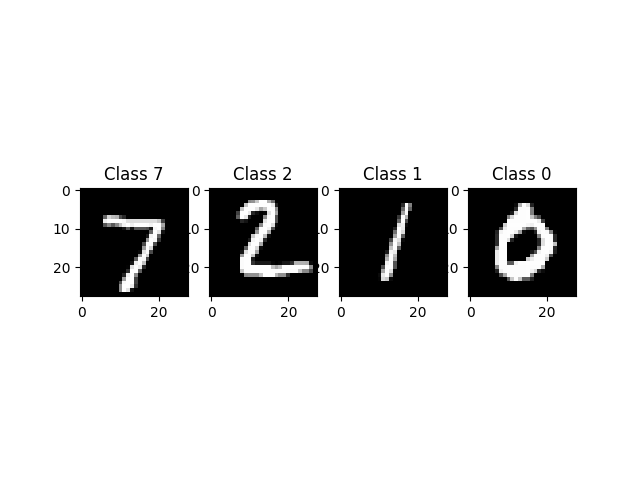
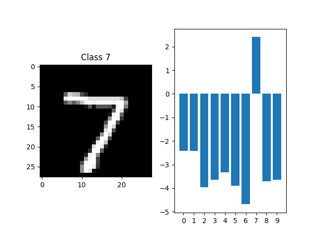

<!DOCTYPE html>
<!--[if IE 8]><html class="no-js lt-ie9" lang="en" > <![endif]-->
<!--[if gt IE 8]><!--> <html class="no-js" lang="en" > <!--<![endif]-->
<head>
  <meta charset="utf-8">
  
  <meta name="viewport" content="width=device-width, initial-scale=1.0">
  
  <title>GXNOR/MNIST inference &mdash; Akida Examples  documentation</title>
  

  
  
    <link rel="shortcut icon" href="../_static/favicon.ico"/>
  
  
  

  
  <script type="text/javascript" src="../_static/js/modernizr.min.js"></script>
  
    
      <script type="text/javascript" id="documentation_options" data-url_root="../" src="../_static/documentation_options.js"></script>
        <script src="../_static/jquery.js"></script>
        <script src="../_static/underscore.js"></script>
        <script src="../_static/doctools.js"></script>
        <script src="../_static/language_data.js"></script>
    
    <script type="text/javascript" src="../_static/js/theme.js"></script>

    

  
  <link rel="stylesheet" href="../_static/css/theme.css" type="text/css" />
  <link rel="stylesheet" href="../_static/pygments.css" type="text/css" />
  <link rel="stylesheet" href="../_static/gallery.css" type="text/css" />
  <link rel="stylesheet" href="../_static/gallery-binder.css" type="text/css" />
  <link rel="stylesheet" href="../_static/gallery-dataframe.css" type="text/css" />
    <link rel="index" title="Index" href="../genindex.html" />
    <link rel="search" title="Search" href="../search.html" />
    <link rel="next" title="Regression tutorial" href="plot_regression.html" />
    <link rel="prev" title="Akida examples" href="index.html" /> 
</head>

<body class="wy-body-for-nav">

   
  <div class="wy-grid-for-nav">
    
    <nav data-toggle="wy-nav-shift" class="wy-nav-side">
      <div class="wy-side-scroll">
        <div class="wy-side-nav-search"  style="background: #3f51b5" >
          

          
            <a href="../index.html">
          

          
            
            
          
          </a>

          
            
            
              <div class="version">
                Akida 1.8.9
              </div>
            
          

          
<div role="search">
  <form id="rtd-search-form" class="wy-form" action="../search.html" method="get">
    <input type="text" name="q" placeholder="Search docs" />
    <input type="hidden" name="check_keywords" value="yes" />
    <input type="hidden" name="area" value="default" />
  </form>
</div>

          
        </div>

        <div class="wy-menu wy-menu-vertical" data-spy="affix" role="navigation" aria-label="main navigation">
          
            
            
              
            
            
              <ul class="current">
<li class="toctree-l1"><a class="reference internal" href="../index.html">Overview</a></li>
<li class="toctree-l1"><a class="reference internal" href="../installation.html">Installation</a><ul>
<li class="toctree-l2"><a class="reference internal" href="../installation.html#requirements">Requirements</a></li>
<li class="toctree-l2"><a class="reference internal" href="../installation.html#quick-installation">Quick installation</a></li>
<li class="toctree-l2"><a class="reference internal" href="../installation.html#running-examples">Running examples</a></li>
</ul>
</li>
<li class="toctree-l1"><a class="reference internal" href="../user_guide/user_guide.html">User guide</a><ul>
<li class="toctree-l2"><a class="reference internal" href="../user_guide/getting_started.html">Getting started</a><ul>
<li class="toctree-l3"><a class="reference internal" href="../user_guide/getting_started.html#for-beginners">For beginners</a></li>
<li class="toctree-l3"><a class="reference internal" href="../user_guide/getting_started.html#for-users-familiar-with-deep-learning">For users familiar with deep-learning</a></li>
</ul>
</li>
<li class="toctree-l2"><a class="reference internal" href="../user_guide/aee.html">Akida user guide</a><ul>
<li class="toctree-l3"><a class="reference internal" href="../user_guide/aee.html#the-akida-execution-engine">The Akida Execution Engine</a><ul>
<li class="toctree-l4"><a class="reference internal" href="../user_guide/aee.html#id1">1. The Spiking Neural Network model</a></li>
<li class="toctree-l4"><a class="reference internal" href="../user_guide/aee.html#id2">2. Input data format</a></li>
<li class="toctree-l4"><a class="reference internal" href="../user_guide/aee.html#id3">3. Determine training mode</a></li>
<li class="toctree-l4"><a class="reference internal" href="../user_guide/aee.html#id4">4. Interpreting outputs</a></li>
</ul>
</li>
<li class="toctree-l3"><a class="reference internal" href="../user_guide/aee.html#neural-network-model">Neural Network model</a><ul>
<li class="toctree-l4"><a class="reference internal" href="../user_guide/aee.html#specifying-the-neural-network-model">Specifying the Neural Network model</a></li>
<li class="toctree-l4"><a class="reference internal" href="../user_guide/aee.html#saving-and-loading">Saving and loading</a></li>
<li class="toctree-l4"><a class="reference internal" href="../user_guide/aee.html#input-layer-types">Input layer types</a></li>
<li class="toctree-l4"><a class="reference internal" href="../user_guide/aee.html#data-processing-layer-types">Data-Processing layer types</a></li>
</ul>
</li>
<li class="toctree-l3"><a class="reference internal" href="../user_guide/aee.html#id5">Using Akida Unsupervised Learning</a><ul>
<li class="toctree-l4"><a class="reference internal" href="../user_guide/aee.html#learning-constraints">Learning constraints</a></li>
<li class="toctree-l4"><a class="reference internal" href="../user_guide/aee.html#compiling-a-layer">Compiling a layer</a></li>
<li class="toctree-l4"><a class="reference internal" href="../user_guide/aee.html#id6">Learning parameters</a></li>
</ul>
</li>
</ul>
</li>
<li class="toctree-l2"><a class="reference internal" href="../user_guide/cnn2snn.html">CNN2SNN toolkit</a><ul>
<li class="toctree-l3"><a class="reference internal" href="../user_guide/cnn2snn.html#overview">Overview</a><ul>
<li class="toctree-l4"><a class="reference internal" href="../user_guide/cnn2snn.html#conversion-workflow">Conversion workflow</a></li>
<li class="toctree-l4"><a class="reference internal" href="../user_guide/cnn2snn.html#typical-training-scenario">Typical training scenario</a></li>
<li class="toctree-l4"><a class="reference internal" href="../user_guide/cnn2snn.html#design-compatibility-constraints">Design compatibility constraints</a></li>
<li class="toctree-l4"><a class="reference internal" href="../user_guide/cnn2snn.html#quantization-compatibility-constraints">Quantization compatibility constraints</a></li>
<li class="toctree-l4"><a class="reference internal" href="../user_guide/cnn2snn.html#command-line-interface">Command-line interface</a></li>
</ul>
</li>
<li class="toctree-l3"><a class="reference internal" href="../user_guide/cnn2snn.html#layers-considerations">Layers Considerations</a><ul>
<li class="toctree-l4"><a class="reference internal" href="../user_guide/cnn2snn.html#supported-layer-types">Supported layer types</a></li>
<li class="toctree-l4"><a class="reference internal" href="../user_guide/cnn2snn.html#cnn2snn-quantization-aware-layers">CNN2SNN Quantization-aware layers</a></li>
<li class="toctree-l4"><a class="reference internal" href="../user_guide/cnn2snn.html#training-only-layers">Training-Only Layers</a></li>
<li class="toctree-l4"><a class="reference internal" href="../user_guide/cnn2snn.html#first-layers">First Layers</a></li>
<li class="toctree-l4"><a class="reference internal" href="../user_guide/cnn2snn.html#id6">Final Layers</a></li>
</ul>
</li>
<li class="toctree-l3"><a class="reference internal" href="../user_guide/cnn2snn.html#tips-and-tricks">Tips and Tricks</a></li>
</ul>
</li>
<li class="toctree-l2"><a class="reference internal" href="../user_guide/akida_models.html">Akida models zoo</a><ul>
<li class="toctree-l3"><a class="reference internal" href="../user_guide/akida_models.html#overview">Overview</a></li>
<li class="toctree-l3"><a class="reference internal" href="../user_guide/akida_models.html#command-line-interface-for-model-creation">Command-line interface for model creation</a></li>
<li class="toctree-l3"><a class="reference internal" href="../user_guide/akida_models.html#command-line-interface-for-model-training">Command-line interface for model training</a><ul>
<li class="toctree-l4"><a class="reference internal" href="../user_guide/akida_models.html#cifar10-training-and-tuning">CIFAR10 training and tuning</a></li>
<li class="toctree-l4"><a class="reference internal" href="../user_guide/akida_models.html#utk-face-training">UTK Face training</a></li>
<li class="toctree-l4"><a class="reference internal" href="../user_guide/akida_models.html#kws-training">KWS training</a></li>
</ul>
</li>
<li class="toctree-l3"><a class="reference internal" href="../user_guide/akida_models.html#id1">Layer Blocks</a><ul>
<li class="toctree-l4"><a class="reference internal" href="../user_guide/akida_models.html#conv-block"><code class="docutils literal notranslate"><span class="pre">conv_block</span></code></a></li>
<li class="toctree-l4"><a class="reference internal" href="../user_guide/akida_models.html#dense-block"><code class="docutils literal notranslate"><span class="pre">dense_block</span></code></a></li>
<li class="toctree-l4"><a class="reference internal" href="../user_guide/akida_models.html#separable-conv-block"><code class="docutils literal notranslate"><span class="pre">separable_conv_block</span></code></a></li>
</ul>
</li>
</ul>
</li>
<li class="toctree-l2"><a class="reference internal" href="../user_guide/hw_constraints.html">Hardware constraints</a><ul>
<li class="toctree-l3"><a class="reference internal" href="../user_guide/hw_constraints.html#input-layer">Input layer</a></li>
<li class="toctree-l3"><a class="reference internal" href="../user_guide/hw_constraints.html#data-processing-layers">Data-Processing layers</a><ul>
<li class="toctree-l4"><a class="reference internal" href="../user_guide/hw_constraints.html#convolutional-layer">Convolutional layer</a></li>
<li class="toctree-l4"><a class="reference internal" href="../user_guide/hw_constraints.html#fully-connected-layer">Fully connected layer</a></li>
</ul>
</li>
</ul>
</li>
</ul>
</li>
<li class="toctree-l1"><a class="reference internal" href="../api_reference/api_reference.html">API reference</a><ul>
<li class="toctree-l2"><a class="reference internal" href="../api_reference/aee_apis.html">Akida Execution Engine</a><ul>
<li class="toctree-l3"><a class="reference internal" href="../api_reference/aee_apis.html#model">Model</a></li>
<li class="toctree-l3"><a class="reference internal" href="../api_reference/aee_apis.html#layer">Layer</a></li>
<li class="toctree-l3"><a class="reference internal" href="../api_reference/aee_apis.html#layerstatistics">LayerStatistics</a></li>
<li class="toctree-l3"><a class="reference internal" href="../api_reference/aee_apis.html#observer">Observer</a></li>
<li class="toctree-l3"><a class="reference internal" href="../api_reference/aee_apis.html#inputdata">InputData</a></li>
<li class="toctree-l3"><a class="reference internal" href="../api_reference/aee_apis.html#inputconvolutional">InputConvolutional</a></li>
<li class="toctree-l3"><a class="reference internal" href="../api_reference/aee_apis.html#fullyconnected">FullyConnected</a></li>
<li class="toctree-l3"><a class="reference internal" href="../api_reference/aee_apis.html#convolutional">Convolutional</a></li>
<li class="toctree-l3"><a class="reference internal" href="../api_reference/aee_apis.html#separableconvolutional">SeparableConvolutional</a></li>
<li class="toctree-l3"><a class="reference internal" href="../api_reference/aee_apis.html#dense">Dense</a></li>
<li class="toctree-l3"><a class="reference internal" href="../api_reference/aee_apis.html#sparse">Sparse</a></li>
<li class="toctree-l3"><a class="reference internal" href="../api_reference/aee_apis.html#coords-to-sparse">coords_to_sparse</a></li>
<li class="toctree-l3"><a class="reference internal" href="../api_reference/aee_apis.html#dense-to-sparse">dense_to_sparse</a></li>
<li class="toctree-l3"><a class="reference internal" href="../api_reference/aee_apis.html#packetize">packetize</a></li>
<li class="toctree-l3"><a class="reference internal" href="../api_reference/aee_apis.html#backend">Backend</a></li>
<li class="toctree-l3"><a class="reference internal" href="../api_reference/aee_apis.html#convolutionmode">ConvolutionMode</a></li>
<li class="toctree-l3"><a class="reference internal" href="../api_reference/aee_apis.html#poolingtype">PoolingType</a></li>
<li class="toctree-l3"><a class="reference internal" href="../api_reference/aee_apis.html#learningtype">LearningType</a></li>
<li class="toctree-l3"><a class="reference internal" href="../api_reference/aee_apis.html#compatibility">Compatibility</a></li>
</ul>
</li>
<li class="toctree-l2"><a class="reference internal" href="../api_reference/cnn2snn_apis.html">CNN2SNN</a><ul>
<li class="toctree-l3"><a class="reference internal" href="../api_reference/cnn2snn_apis.html#quantize">quantize</a></li>
<li class="toctree-l3"><a class="reference internal" href="../api_reference/cnn2snn_apis.html#quantize-layer">quantize_layer</a></li>
<li class="toctree-l3"><a class="reference internal" href="../api_reference/cnn2snn_apis.html#convert">convert</a></li>
<li class="toctree-l3"><a class="reference internal" href="../api_reference/cnn2snn_apis.html#check-model-compatibility">check_model_compatibility</a></li>
<li class="toctree-l3"><a class="reference internal" href="../api_reference/cnn2snn_apis.html#weightquantizer">WeightQuantizer</a></li>
<li class="toctree-l3"><a class="reference internal" href="../api_reference/cnn2snn_apis.html#trainableweightquantizer">TrainableWeightQuantizer</a></li>
<li class="toctree-l3"><a class="reference internal" href="../api_reference/cnn2snn_apis.html#maxquantizer">MaxQuantizer</a></li>
<li class="toctree-l3"><a class="reference internal" href="../api_reference/cnn2snn_apis.html#maxperaxisquantizer">MaxPerAxisQuantizer</a></li>
<li class="toctree-l3"><a class="reference internal" href="../api_reference/cnn2snn_apis.html#weightfloat">WeightFloat</a></li>
<li class="toctree-l3"><a class="reference internal" href="../api_reference/cnn2snn_apis.html#quantizedconv2d">QuantizedConv2D</a></li>
<li class="toctree-l3"><a class="reference internal" href="../api_reference/cnn2snn_apis.html#quantizeddepthwiseconv2d">QuantizedDepthwiseConv2D</a></li>
<li class="toctree-l3"><a class="reference internal" href="../api_reference/cnn2snn_apis.html#quantizeddense">QuantizedDense</a></li>
<li class="toctree-l3"><a class="reference internal" href="../api_reference/cnn2snn_apis.html#quantizedseparableconv2d">QuantizedSeparableConv2D</a></li>
<li class="toctree-l3"><a class="reference internal" href="../api_reference/cnn2snn_apis.html#activationdiscreterelu">ActivationDiscreteRelu</a></li>
<li class="toctree-l3"><a class="reference internal" href="../api_reference/cnn2snn_apis.html#quantizedrelu">QuantizedReLU</a></li>
</ul>
</li>
<li class="toctree-l2"><a class="reference internal" href="../api_reference/akida_models_apis.html">Akida models</a><ul>
<li class="toctree-l3"><a class="reference internal" href="../api_reference/akida_models_apis.html#quantization-blocks">Quantization blocks</a><ul>
<li class="toctree-l4"><a class="reference internal" href="../api_reference/akida_models_apis.html#conv-block">conv_block</a></li>
<li class="toctree-l4"><a class="reference internal" href="../api_reference/akida_models_apis.html#separable-conv-block">separable_conv_block</a></li>
<li class="toctree-l4"><a class="reference internal" href="../api_reference/akida_models_apis.html#dense-block">dense_block</a></li>
</ul>
</li>
<li class="toctree-l3"><a class="reference internal" href="../api_reference/akida_models_apis.html#layer-blocks">Layer blocks</a><ul>
<li class="toctree-l4"><a class="reference internal" href="../api_reference/akida_models_apis.html#id1">conv_block</a></li>
<li class="toctree-l4"><a class="reference internal" href="../api_reference/akida_models_apis.html#id2">separable_conv_block</a></li>
<li class="toctree-l4"><a class="reference internal" href="../api_reference/akida_models_apis.html#id3">dense_block</a></li>
</ul>
</li>
<li class="toctree-l3"><a class="reference internal" href="../api_reference/akida_models_apis.html#model-zoo">Model zoo</a><ul>
<li class="toctree-l4"><a class="reference internal" href="../api_reference/akida_models_apis.html#mobilenet">Mobilenet</a></li>
<li class="toctree-l4"><a class="reference internal" href="../api_reference/akida_models_apis.html#ds-cnn">DS-CNN</a></li>
<li class="toctree-l4"><a class="reference internal" href="../api_reference/akida_models_apis.html#vgg">VGG</a></li>
<li class="toctree-l4"><a class="reference internal" href="../api_reference/akida_models_apis.html#yolo">YOLO</a></li>
</ul>
</li>
</ul>
</li>
</ul>
</li>
<li class="toctree-l1 current"><a class="reference internal" href="index.html">Examples</a><ul class="current">
<li class="toctree-l2 current"><a class="current reference internal" href="#">GXNOR/MNIST inference</a><ul>
<li class="toctree-l3"><a class="reference internal" href="#loading-the-mnist-dataset">1. Loading the MNIST dataset</a></li>
<li class="toctree-l3"><a class="reference internal" href="#look-at-some-images-from-the-test-dataset">2. Look at some images from the test dataset</a></li>
<li class="toctree-l3"><a class="reference internal" href="#load-the-pre-trained-akida-model">3. Load the pre-trained Akida model</a></li>
<li class="toctree-l3"><a class="reference internal" href="#classify-a-single-image">4. Classify a single image</a></li>
<li class="toctree-l3"><a class="reference internal" href="#check-performance-across-a-number-of-samples">5. Check performance across a number of samples</a></li>
</ul>
</li>
<li class="toctree-l2"><a class="reference internal" href="plot_regression.html">Regression tutorial</a><ul>
<li class="toctree-l3"><a class="reference internal" href="plot_regression.html#load-the-dataset">1. Load the dataset</a></li>
<li class="toctree-l3"><a class="reference internal" href="plot_regression.html#load-a-pre-trained-native-keras-model">2. Load a pre-trained native Keras model</a></li>
<li class="toctree-l3"><a class="reference internal" href="plot_regression.html#load-a-pre-trained-quantized-keras-model-satisfying-akida-nsoc-requirements">3. Load a pre-trained quantized Keras model satisfying Akida NSoC requirements</a></li>
<li class="toctree-l3"><a class="reference internal" href="plot_regression.html#conversion-to-akida">4. Conversion to Akida</a></li>
<li class="toctree-l3"><a class="reference internal" href="plot_regression.html#estimate-age-on-a-single-image">5. Estimate age on a single image</a></li>
</ul>
</li>
<li class="toctree-l2"><a class="reference internal" href="plot_cnn_flow.html">CNN conversion flow tutorial</a><ul>
<li class="toctree-l3"><a class="reference internal" href="plot_cnn_flow.html#load-and-reshape-mnist-dataset">1. Load and reshape MNIST dataset</a></li>
<li class="toctree-l3"><a class="reference internal" href="plot_cnn_flow.html#model-definition">2. Model definition</a><ul>
<li class="toctree-l4"><a class="reference internal" href="plot_cnn_flow.html#model-training">3. Model training</a></li>
</ul>
</li>
<li class="toctree-l3"><a class="reference internal" href="plot_cnn_flow.html#model-quantization">4. Model quantization</a></li>
<li class="toctree-l3"><a class="reference internal" href="plot_cnn_flow.html#model-fine-tuning-quantization-aware-training">5. Model fine tuning (quantization-aware training)</a></li>
<li class="toctree-l3"><a class="reference internal" href="plot_cnn_flow.html#model-conversion">6. Model conversion</a></li>
</ul>
</li>
<li class="toctree-l2"><a class="reference internal" href="plot_ds_cnn_kws.html">DS-CNN/KWS inference</a><ul>
<li class="toctree-l3"><a class="reference internal" href="plot_ds_cnn_kws.html#load-the-preprocessed-dataset">1. Load the preprocessed dataset</a></li>
<li class="toctree-l3"><a class="reference internal" href="plot_ds_cnn_kws.html#load-a-pre-trained-native-keras-model">2. Load a pre-trained native Keras model</a></li>
<li class="toctree-l3"><a class="reference internal" href="plot_ds_cnn_kws.html#load-a-pre-trained-quantized-keras-model-satisfying-akida-nsoc-requirements">3. Load a pre-trained quantized Keras model satisfying Akida NSoC requirements</a></li>
<li class="toctree-l3"><a class="reference internal" href="plot_ds_cnn_kws.html#conversion-to-akida">4. Conversion to Akida</a><ul>
<li class="toctree-l4"><a class="reference internal" href="plot_ds_cnn_kws.html#confusion-matrix">5. Confusion matrix</a></li>
</ul>
</li>
</ul>
</li>
<li class="toctree-l2"><a class="reference internal" href="plot_ds_cnn_cifar10.html">DS-CNN CIFAR10 inference</a><ul>
<li class="toctree-l3"><a class="reference internal" href="plot_ds_cnn_cifar10.html#dataset-preparation">1. Dataset preparation</a></li>
<li class="toctree-l3"><a class="reference internal" href="plot_ds_cnn_cifar10.html#create-a-keras-ds-cnn-model">2. Create a Keras DS-CNN model</a></li>
<li class="toctree-l3"><a class="reference internal" href="plot_ds_cnn_cifar10.html#quantized-model">3. Quantized model</a></li>
<li class="toctree-l3"><a class="reference internal" href="plot_ds_cnn_cifar10.html#pretrained-quantized-model">4. Pretrained quantized model</a></li>
<li class="toctree-l3"><a class="reference internal" href="plot_ds_cnn_cifar10.html#conversion-to-akida">5. Conversion to Akida</a><ul>
<li class="toctree-l4"><a class="reference internal" href="plot_ds_cnn_cifar10.html#convert-to-akida-model">5.1 Convert to Akida model</a></li>
<li class="toctree-l4"><a class="reference internal" href="plot_ds_cnn_cifar10.html#check-hardware-compliancy">5.2 Check hardware compliancy</a></li>
<li class="toctree-l4"><a class="reference internal" href="plot_ds_cnn_cifar10.html#check-performance">5.3 Check performance</a></li>
<li class="toctree-l4"><a class="reference internal" href="plot_ds_cnn_cifar10.html#show-predictions-for-a-random-image">5.4 Show predictions for a random image</a></li>
</ul>
</li>
</ul>
</li>
<li class="toctree-l2"><a class="reference internal" href="plot_voc_yolo_detection.html">YOLO/PASCAL-VOC detection tutorial</a><ul>
<li class="toctree-l3"><a class="reference internal" href="plot_voc_yolo_detection.html#introduction">1. Introduction</a><ul>
<li class="toctree-l4"><a class="reference internal" href="plot_voc_yolo_detection.html#object-detection">1.1 Object detection</a></li>
<li class="toctree-l4"><a class="reference internal" href="plot_voc_yolo_detection.html#yolo-key-concepts">1.2 YOLO key concepts</a></li>
</ul>
</li>
<li class="toctree-l3"><a class="reference internal" href="plot_voc_yolo_detection.html#preprocessing-tools">2. Preprocessing tools</a></li>
<li class="toctree-l3"><a class="reference internal" href="plot_voc_yolo_detection.html#model-architecture">3. Model architecture</a></li>
<li class="toctree-l3"><a class="reference internal" href="plot_voc_yolo_detection.html#training">4. Training</a></li>
<li class="toctree-l3"><a class="reference internal" href="plot_voc_yolo_detection.html#performance">5. Performance</a></li>
<li class="toctree-l3"><a class="reference internal" href="plot_voc_yolo_detection.html#conversion-to-akida">6. Conversion to Akida</a><ul>
<li class="toctree-l4"><a class="reference internal" href="plot_voc_yolo_detection.html#convert-to-akida-model">6.1 Convert to Akida model</a></li>
<li class="toctree-l4"><a class="reference internal" href="plot_voc_yolo_detection.html#check-performance">6.1 Check performance</a></li>
<li class="toctree-l4"><a class="reference internal" href="plot_voc_yolo_detection.html#show-predictions-for-a-random-image">6.2 Show predictions for a random image</a></li>
</ul>
</li>
</ul>
</li>
<li class="toctree-l2"><a class="reference internal" href="plot_transfer_learning.html">Transfer learning with MobileNet for cats vs. dogs</a><ul>
<li class="toctree-l3"><a class="reference internal" href="plot_transfer_learning.html#transfer-learning-process">Transfer learning process</a></li>
<li class="toctree-l3"><a class="reference internal" href="plot_transfer_learning.html#load-and-preprocess-data">1. Load and preprocess data</a><ul>
<li class="toctree-l4"><a class="reference internal" href="plot_transfer_learning.html#a-load-and-split-data">1.A - Load and split data</a></li>
<li class="toctree-l4"><a class="reference internal" href="plot_transfer_learning.html#b-preprocess-the-test-set">1.B - Preprocess the test set</a></li>
<li class="toctree-l4"><a class="reference internal" href="plot_transfer_learning.html#c-get-labels">1.C - Get labels</a></li>
</ul>
</li>
<li class="toctree-l3"><a class="reference internal" href="plot_transfer_learning.html#modify-a-pre-trained-base-keras-model">2. Modify a pre-trained base Keras model</a><ul>
<li class="toctree-l4"><a class="reference internal" href="plot_transfer_learning.html#a-instantiate-a-keras-base-model">2.A - Instantiate a Keras base model</a></li>
<li class="toctree-l4"><a class="reference internal" href="plot_transfer_learning.html#b-modify-the-network-for-the-new-task">2.B - Modify the network for the new task</a></li>
</ul>
</li>
<li class="toctree-l3"><a class="reference internal" href="plot_transfer_learning.html#train-the-transferred-model-for-the-new-task">3. Train the transferred model for the new task</a></li>
<li class="toctree-l3"><a class="reference internal" href="plot_transfer_learning.html#quantize-the-top-layer">4 Quantize the top layer</a></li>
<li class="toctree-l3"><a class="reference internal" href="plot_transfer_learning.html#convert-to-akida">5. Convert to Akida</a></li>
<li class="toctree-l3"><a class="reference internal" href="plot_transfer_learning.html#plot-confusion-matrix">6. Plot confusion matrix</a></li>
</ul>
</li>
<li class="toctree-l2"><a class="reference internal" href="plot_mobilenet_imagenet.html">MobileNet/ImageNet inference</a><ul>
<li class="toctree-l3"><a class="reference internal" href="plot_mobilenet_imagenet.html#load-cnn2snn-tool-dependencies">1. Load CNN2SNN tool dependencies</a></li>
<li class="toctree-l3"><a class="reference internal" href="plot_mobilenet_imagenet.html#load-test-images-from-imagenet">2. Load test images from ImageNet</a><ul>
<li class="toctree-l4"><a class="reference internal" href="plot_mobilenet_imagenet.html#load-test-images-and-preprocess-test-images">2.1 Load test images and preprocess test images</a></li>
<li class="toctree-l4"><a class="reference internal" href="plot_mobilenet_imagenet.html#load-labels">2.2 Load labels</a></li>
</ul>
</li>
<li class="toctree-l3"><a class="reference internal" href="plot_mobilenet_imagenet.html#create-a-quantized-keras-model">3. Create a quantized Keras model</a><ul>
<li class="toctree-l4"><a class="reference internal" href="plot_mobilenet_imagenet.html#instantiate-keras-model">3.1 Instantiate Keras model</a></li>
<li class="toctree-l4"><a class="reference internal" href="plot_mobilenet_imagenet.html#check-performance-of-the-keras-model">3.2 Check performance of the Keras model</a></li>
</ul>
</li>
<li class="toctree-l3"><a class="reference internal" href="plot_mobilenet_imagenet.html#convert-keras-model-for-akida-nsoc">4. Convert Keras model for Akida NSoC</a><ul>
<li class="toctree-l4"><a class="reference internal" href="plot_mobilenet_imagenet.html#convert-keras-model-to-an-akida-compatible-model">4.1 Convert Keras model to an Akida compatible model</a></li>
<li class="toctree-l4"><a class="reference internal" href="plot_mobilenet_imagenet.html#test-performance-of-the-akida-model">4.2 Test performance of the Akida model</a></li>
<li class="toctree-l4"><a class="reference internal" href="plot_mobilenet_imagenet.html#show-predictions-for-a-random-test-image">4.3 Show predictions for a random test image</a></li>
</ul>
</li>
</ul>
</li>
</ul>
</li>
<li class="toctree-l1"><a class="reference external" href="https://github.com/Brainchip-Inc/akida_examples/releases">Changelog</a></li>
<li class="toctree-l1"><a class="reference external" href="https://support.brainchip.com/portal/home">Support</a></li>
<li class="toctree-l1"><a class="reference internal" href="../license.html">License</a></li>
</ul>

            
          
        </div>
      </div>
    </nav>

    <section data-toggle="wy-nav-shift" class="wy-nav-content-wrap">

      
      <nav class="wy-nav-top" aria-label="top navigation">
        
          <i data-toggle="wy-nav-top" class="fa fa-bars"></i>
          <a href="../index.html">Akida Examples</a>
        
      </nav>


      <div class="wy-nav-content">
        
        <div class="rst-content">
        
          


<div role="navigation" aria-label="breadcrumbs navigation">

  <ul class="wy-breadcrumbs">
    
      <li><a href="../index.html">Docs</a> &raquo;</li>
        
          <li><a href="index.html">Akida examples</a> &raquo;</li>
        
      <li>GXNOR/MNIST inference</li>
    
    
      <li class="wy-breadcrumbs-aside">
        
            
        
      </li>
    
  </ul>

  
  <hr/>
</div>
          <div role="main" class="document" itemscope="itemscope" itemtype="http://schema.org/Article">
           <div itemprop="articleBody">
            
  <div class="sphx-glr-download-link-note admonition note">
<p class="admonition-title">Note</p>
<p>Click <a class="reference internal" href="#sphx-glr-download-examples-plot-gxnor-mnist-py"><span class="std std-ref">here</span></a>     to download the full example code</p>
</div>
<div class="sphx-glr-example-title section" id="gxnor-mnist-inference">
<span id="sphx-glr-examples-plot-gxnor-mnist-py"></span><h1>GXNOR/MNIST inference<a class="headerlink" href="#gxnor-mnist-inference" title="Permalink to this headline">¶</a></h1>
<p>The MNIST dataset is a handwritten digits database. It has a training
set of 60,000 samples, and a test set of 10,000 samples. Each sample
comprises a 28x28 pixel image and an associated label.</p>
<p>This tutorial illustrates how to use a pre-trained Akida model to process the
MNIST dataset.</p>
<div class="section" id="loading-the-mnist-dataset">
<h2>1. Loading the MNIST dataset<a class="headerlink" href="#loading-the-mnist-dataset" title="Permalink to this headline">¶</a></h2>
<div class="highlight-default notranslate"><div class="highlight"><pre><span></span><span class="c1"># Various imports needed for the tutorial</span>
<span class="kn">import</span> <span class="nn">os</span>
<span class="kn">import</span> <span class="nn">numpy</span> <span class="k">as</span> <span class="nn">np</span>
<span class="kn">import</span> <span class="nn">matplotlib.cm</span> <span class="k">as</span> <span class="nn">cm</span>
<span class="kn">import</span> <span class="nn">matplotlib.pyplot</span> <span class="k">as</span> <span class="nn">plt</span>
<span class="kn">import</span> <span class="nn">warnings</span>
<span class="kn">from</span> <span class="nn">tensorflow.keras.utils</span> <span class="kn">import</span> <span class="n">get_file</span>
<span class="kn">from</span> <span class="nn">tensorflow.keras.datasets</span> <span class="kn">import</span> <span class="n">mnist</span>
<span class="kn">from</span> <span class="nn">sklearn.metrics</span> <span class="kn">import</span> <span class="n">f1_score</span><span class="p">,</span> <span class="n">accuracy_score</span>

<span class="c1"># Filter warnings</span>
<span class="n">warnings</span><span class="o">.</span><span class="n">filterwarnings</span><span class="p">(</span><span class="s2">&quot;ignore&quot;</span><span class="p">,</span> <span class="n">module</span><span class="o">=</span><span class="s2">&quot;matplotlib&quot;</span><span class="p">)</span>

<span class="c1"># Akida specific imports</span>
<span class="kn">from</span> <span class="nn">akida</span> <span class="kn">import</span> <span class="n">Model</span>
</pre></div>
</div>
<div class="highlight-default notranslate"><div class="highlight"><pre><span></span><span class="c1"># Retrieve MNIST dataset</span>
<span class="p">(</span><span class="n">train_set</span><span class="p">,</span> <span class="n">train_label</span><span class="p">),</span> <span class="p">(</span><span class="n">test_set</span><span class="p">,</span> <span class="n">test_label</span><span class="p">)</span> <span class="o">=</span> <span class="n">mnist</span><span class="o">.</span><span class="n">load_data</span><span class="p">()</span>

<span class="c1"># Add a dimension to images sets as akida expects 4 dimensions inputs</span>
<span class="n">train_set</span> <span class="o">=</span> <span class="n">np</span><span class="o">.</span><span class="n">expand_dims</span><span class="p">(</span><span class="n">train_set</span><span class="p">,</span> <span class="o">-</span><span class="mi">1</span><span class="p">)</span>
<span class="n">test_set</span> <span class="o">=</span> <span class="n">np</span><span class="o">.</span><span class="n">expand_dims</span><span class="p">(</span><span class="n">test_set</span><span class="p">,</span> <span class="o">-</span><span class="mi">1</span><span class="p">)</span>
</pre></div>
</div>
<p class="sphx-glr-script-out">Out:</p>
<div class="sphx-glr-script-out highlight-none notranslate"><div class="highlight"><pre><span></span>Downloading data from https://storage.googleapis.com/tensorflow/tf-keras-datasets/mnist.npz

    8192/11490434 [..............................] - ETA: 0s
 1130496/11490434 [=&gt;............................] - ETA: 0s
 1654784/11490434 [===&gt;..........................] - ETA: 0s
 5210112/11490434 [============&gt;.................] - ETA: 0s
 6668288/11490434 [================&gt;.............] - ETA: 0s
 8749056/11490434 [=====================&gt;........] - ETA: 0s
10674176/11490434 [==========================&gt;...] - ETA: 0s
11493376/11490434 [==============================] - 0s 0us/step
</pre></div>
</div>
</div>
<div class="section" id="look-at-some-images-from-the-test-dataset">
<h2>2. Look at some images from the test dataset<a class="headerlink" href="#look-at-some-images-from-the-test-dataset" title="Permalink to this headline">¶</a></h2>
<div class="highlight-default notranslate"><div class="highlight"><pre><span></span><span class="c1"># Display a few images from the test set</span>
<span class="n">f</span><span class="p">,</span> <span class="n">axarr</span> <span class="o">=</span> <span class="n">plt</span><span class="o">.</span><span class="n">subplots</span><span class="p">(</span><span class="mi">1</span><span class="p">,</span> <span class="mi">4</span><span class="p">)</span>
<span class="k">for</span> <span class="n">i</span> <span class="ow">in</span> <span class="nb">range</span><span class="p">(</span><span class="mi">0</span><span class="p">,</span> <span class="mi">4</span><span class="p">):</span>
    <span class="n">axarr</span><span class="p">[</span><span class="n">i</span><span class="p">]</span><span class="o">.</span><span class="n">imshow</span><span class="p">(</span><span class="n">test_set</span><span class="p">[</span><span class="n">i</span><span class="p">]</span><span class="o">.</span><span class="n">reshape</span><span class="p">((</span><span class="mi">28</span><span class="p">,</span> <span class="mi">28</span><span class="p">)),</span> <span class="n">cmap</span><span class="o">=</span><span class="n">cm</span><span class="o">.</span><span class="n">Greys_r</span><span class="p">)</span>
    <span class="n">axarr</span><span class="p">[</span><span class="n">i</span><span class="p">]</span><span class="o">.</span><span class="n">set_title</span><span class="p">(</span><span class="s1">&#39;Class </span><span class="si">%d</span><span class="s1">&#39;</span> <span class="o">%</span> <span class="n">test_label</span><span class="p">[</span><span class="n">i</span><span class="p">])</span>
<span class="n">plt</span><span class="o">.</span><span class="n">show</span><span class="p">()</span>
</pre></div>
</div>

</div>
<div class="section" id="load-the-pre-trained-akida-model">
<h2>3. Load the pre-trained Akida model<a class="headerlink" href="#load-the-pre-trained-akida-model" title="Permalink to this headline">¶</a></h2>
<p>The pre-trained neural network model is available on
<a class="reference external" href="http://data.brainchip.com/models/gxnor/">Brainchip data server</a>
You only need to pass this .fbz file to the Akida Execution Engine in order
to instantiate the model.</p>
<div class="highlight-default notranslate"><div class="highlight"><pre><span></span><span class="c1"># Load provided model configuration file</span>
<span class="n">model_file</span> <span class="o">=</span> <span class="n">get_file</span><span class="p">(</span><span class="s2">&quot;gxnor_mnist.fbz&quot;</span><span class="p">,</span>
                      <span class="s2">&quot;http://data.brainchip.com/models/gxnor/gxnor_mnist.fbz&quot;</span><span class="p">,</span>
                      <span class="n">cache_subdir</span><span class="o">=</span><span class="s1">&#39;models/gxnor&#39;</span><span class="p">)</span>
<span class="n">model_akida</span> <span class="o">=</span> <span class="n">Model</span><span class="p">(</span><span class="n">model_file</span><span class="p">)</span>
<span class="n">model_akida</span><span class="o">.</span><span class="n">summary</span><span class="p">()</span>
</pre></div>
</div>
<p class="sphx-glr-script-out">Out:</p>
<div class="sphx-glr-script-out highlight-none notranslate"><div class="highlight"><pre><span></span>Downloading data from http://data.brainchip.com/models/gxnor/gxnor_mnist.fbz

  8192/373501 [..............................] - ETA: 0s
 73728/373501 [====&gt;.........................] - ETA: 0s
270336/373501 [====================&gt;.........] - ETA: 0s
376832/373501 [==============================] - 0s 0us/step
                        Model Summary
______________________________________________________________
Layer (type)                 Output shape  Kernel shape
==============================================================
conv_0 (InputConvolutional)  [14, 14, 32]  (5, 5, 1, 32)
______________________________________________________________
conv_1 (Convolutional)       [7, 7, 32]    (5, 5, 32, 32)
______________________________________________________________
conv_2 (Convolutional)       [7, 7, 32]    (5, 5, 32, 32)
______________________________________________________________
dense_2 (FullyConnected)     [1, 1, 512]   (1, 1, 1568, 512)
______________________________________________________________
dense_3 (FullyConnected)     [1, 1, 10]    (1, 1, 512, 10)
______________________________________________________________
Input shape: 28, 28, 1
Backend type: Software - 1.8.9
</pre></div>
</div>
</div>
<div class="section" id="classify-a-single-image">
<h2>4. Classify a single image<a class="headerlink" href="#classify-a-single-image" title="Permalink to this headline">¶</a></h2>
<p>Now try processing a single image, say, the first image in the dataset
that we looked at above:</p>
<div class="highlight-default notranslate"><div class="highlight"><pre><span></span><span class="c1"># Test a single example</span>
<span class="n">sample_image</span> <span class="o">=</span> <span class="mi">0</span>
<span class="n">image</span> <span class="o">=</span> <span class="n">test_set</span><span class="p">[</span><span class="n">sample_image</span><span class="p">]</span>
<span class="n">outputs</span> <span class="o">=</span> <span class="n">model_akida</span><span class="o">.</span><span class="n">evaluate</span><span class="p">(</span><span class="n">image</span><span class="o">.</span><span class="n">reshape</span><span class="p">(</span><span class="mi">1</span><span class="p">,</span> <span class="mi">28</span><span class="p">,</span> <span class="mi">28</span><span class="p">,</span> <span class="mi">1</span><span class="p">))</span>
<span class="nb">print</span><span class="p">(</span><span class="s1">&#39;Input Label: </span><span class="si">%i</span><span class="s1">&#39;</span> <span class="o">%</span> <span class="n">test_label</span><span class="p">[</span><span class="n">sample_image</span><span class="p">])</span>

<span class="n">f</span><span class="p">,</span> <span class="n">axarr</span> <span class="o">=</span> <span class="n">plt</span><span class="o">.</span><span class="n">subplots</span><span class="p">(</span><span class="mi">1</span><span class="p">,</span> <span class="mi">2</span><span class="p">)</span>
<span class="n">axarr</span><span class="p">[</span><span class="mi">0</span><span class="p">]</span><span class="o">.</span><span class="n">imshow</span><span class="p">(</span><span class="n">test_set</span><span class="p">[</span><span class="n">sample_image</span><span class="p">]</span><span class="o">.</span><span class="n">reshape</span><span class="p">((</span><span class="mi">28</span><span class="p">,</span> <span class="mi">28</span><span class="p">)),</span> <span class="n">cmap</span><span class="o">=</span><span class="n">cm</span><span class="o">.</span><span class="n">Greys_r</span><span class="p">)</span>
<span class="n">axarr</span><span class="p">[</span><span class="mi">0</span><span class="p">]</span><span class="o">.</span><span class="n">set_title</span><span class="p">(</span><span class="s1">&#39;Class </span><span class="si">%d</span><span class="s1">&#39;</span> <span class="o">%</span> <span class="n">test_label</span><span class="p">[</span><span class="n">sample_image</span><span class="p">])</span>
<span class="n">axarr</span><span class="p">[</span><span class="mi">1</span><span class="p">]</span><span class="o">.</span><span class="n">bar</span><span class="p">(</span><span class="nb">range</span><span class="p">(</span><span class="mi">10</span><span class="p">),</span> <span class="n">outputs</span><span class="o">.</span><span class="n">squeeze</span><span class="p">())</span>
<span class="n">axarr</span><span class="p">[</span><span class="mi">1</span><span class="p">]</span><span class="o">.</span><span class="n">set_xticks</span><span class="p">(</span><span class="nb">range</span><span class="p">(</span><span class="mi">10</span><span class="p">))</span>
<span class="n">plt</span><span class="o">.</span><span class="n">show</span><span class="p">()</span>

<span class="nb">print</span><span class="p">(</span><span class="n">outputs</span><span class="o">.</span><span class="n">squeeze</span><span class="p">())</span>
</pre></div>
</div>

<p class="sphx-glr-script-out">Out:</p>
<div class="sphx-glr-script-out highlight-none notranslate"><div class="highlight"><pre><span></span>Input Label: 7
[-2.4073963 -2.4073963 -3.9689505 -3.6436267 -3.3183029 -3.9038858
 -4.684663   2.4073963 -3.7086916 -3.6436267]
</pre></div>
</div>
<p>Consider the output from the model, printed above. As is typical in
backprop trained models, the final layer here comprises a
‘fully-connected or ‘dense’ layer, with one neuron per class in the
data (here, 10). The goal of training is to maximize the response of the
neuron corresponding to the label of each training sample, while
minimizing the responses of the other neurons.</p>
<p>In the bar chart above, you can see the outputs from all 10 neurons. It
is easy to see that neuron 7 responds much more strongly than the
others. The first sample is indeed a number 7.</p>
<p>Check this for some of the other samples by editing the value of
sample_image in the script above (anything from 0 to 9999).</p>
</div>
<div class="section" id="check-performance-across-a-number-of-samples">
<h2>5. Check performance across a number of samples<a class="headerlink" href="#check-performance-across-a-number-of-samples" title="Permalink to this headline">¶</a></h2>
<p>We’ve included a utility to test performance across a large number of
samples. You can run this below.</p>
<div class="highlight-default notranslate"><div class="highlight"><pre><span></span><span class="c1"># Check performance against num_samples samples</span>
<span class="n">num_samples</span> <span class="o">=</span> <span class="mi">10000</span>

<span class="n">results</span> <span class="o">=</span> <span class="n">model_akida</span><span class="o">.</span><span class="n">predict</span><span class="p">(</span><span class="n">test_set</span><span class="p">[:</span><span class="nb">int</span><span class="p">(</span><span class="n">num_samples</span><span class="p">)],</span> <span class="mi">10</span><span class="p">)</span>
<span class="n">accuracy</span> <span class="o">=</span> <span class="n">accuracy_score</span><span class="p">(</span><span class="n">test_label</span><span class="p">[:</span><span class="n">num_samples</span><span class="p">],</span> <span class="n">results</span><span class="p">[:</span><span class="n">num_samples</span><span class="p">])</span>
<span class="n">f1</span> <span class="o">=</span> <span class="n">f1_score</span><span class="p">(</span><span class="n">test_label</span><span class="p">[:</span><span class="n">num_samples</span><span class="p">],</span>
              <span class="n">results</span><span class="p">[:</span><span class="n">num_samples</span><span class="p">],</span>
              <span class="n">average</span><span class="o">=</span><span class="s1">&#39;weighted&#39;</span><span class="p">)</span>

<span class="c1"># For non-regression purpose</span>
<span class="k">assert</span> <span class="n">accuracy</span> <span class="o">&gt;</span> <span class="mf">0.99</span>

<span class="c1"># Print model statistics</span>
<span class="nb">print</span><span class="p">(</span><span class="s2">&quot;Model statistics&quot;</span><span class="p">)</span>
<span class="n">stats</span> <span class="o">=</span> <span class="n">model_akida</span><span class="o">.</span><span class="n">get_statistics</span><span class="p">()</span>
<span class="n">model_akida</span><span class="o">.</span><span class="n">predict</span><span class="p">(</span><span class="n">test_set</span><span class="p">[:</span><span class="mi">20</span><span class="p">],</span> <span class="mi">10</span><span class="p">)</span>
<span class="k">for</span> <span class="n">_</span><span class="p">,</span> <span class="n">stat</span> <span class="ow">in</span> <span class="n">stats</span><span class="o">.</span><span class="n">items</span><span class="p">():</span>
    <span class="nb">print</span><span class="p">(</span><span class="n">stat</span><span class="p">)</span>

<span class="c1"># Display results</span>
<span class="nb">print</span><span class="p">(</span><span class="s2">&quot;Accuracy: &quot;</span> <span class="o">+</span> <span class="s2">&quot;</span><span class="si">{0:.2f}</span><span class="s2">&quot;</span><span class="o">.</span><span class="n">format</span><span class="p">(</span><span class="mi">100</span> <span class="o">*</span> <span class="n">accuracy</span><span class="p">)</span> <span class="o">+</span> <span class="s2">&quot;% / &quot;</span> <span class="o">+</span> <span class="s2">&quot;F1 score: &quot;</span> <span class="o">+</span>
      <span class="s2">&quot;</span><span class="si">{0:.2f}</span><span class="s2">&quot;</span><span class="o">.</span><span class="n">format</span><span class="p">(</span><span class="n">f1</span><span class="p">))</span>
</pre></div>
</div>
<p class="sphx-glr-script-out">Out:</p>
<div class="sphx-glr-script-out highlight-none notranslate"><div class="highlight"><pre><span></span>Model statistics
Layer (type)                  output sparsity
conv_0 (InputConvolutional)   0.85
Layer (type)                  input sparsity      output sparsity     ops
conv_1 (Convolutional)        0.85                0.78                752000
Layer (type)                  input sparsity      output sparsity     ops
conv_2 (Convolutional)        0.78                0.69                270000
Layer (type)                  input sparsity      output sparsity     ops
dense_2 (FullyConnected)      0.69                0.68                246630
Layer (type)                  input sparsity      output sparsity     ops
dense_3 (FullyConnected)      0.68                0.00                1650
Accuracy: 99.07% / F1 score: 0.99
</pre></div>
</div>
<p>Depending on the number of samples you run, you should find a
performance of around 99% (99.35% if you run all 10000 samples).</p>
<p>Note that classification here is done simply by identifying the neuron
with the highest activation level. Slightly higher performance is
actually possible for this model implementation (~99.1 %) if a very
slightly more complex final classification is applied (with a single
additional integer subtraction per neuron), but for simplicity we leave
those details aside here. See the cnn2snn training framework for a full
description.</p>
<p class="sphx-glr-timing"><strong>Total running time of the script:</strong> ( 0 minutes  5.406 seconds)</p>
<div class="sphx-glr-footer class sphx-glr-footer-example docutils container" id="sphx-glr-download-examples-plot-gxnor-mnist-py">
<div class="sphx-glr-download sphx-glr-download-python docutils container">
<p><a class="reference download internal" download="" href="../_downloads/2312b8e60e960e9aef21b0c45fd375f6/plot_gxnor_mnist.py"><code class="xref download docutils literal notranslate"><span class="pre">Download</span> <span class="pre">Python</span> <span class="pre">source</span> <span class="pre">code:</span> <span class="pre">plot_gxnor_mnist.py</span></code></a></p>
</div>
<div class="sphx-glr-download sphx-glr-download-jupyter docutils container">
<p><a class="reference download internal" download="" href="../_downloads/98b0dc9aae4fcd7227af6fd8f52a2884/plot_gxnor_mnist.ipynb"><code class="xref download docutils literal notranslate"><span class="pre">Download</span> <span class="pre">Jupyter</span> <span class="pre">notebook:</span> <span class="pre">plot_gxnor_mnist.ipynb</span></code></a></p>
</div>
</div>
<p class="sphx-glr-signature"><a class="reference external" href="https://sphinx-gallery.github.io">Gallery generated by Sphinx-Gallery</a></p>
</div>
</div>


           </div>
           
          </div>
          <footer>
  
    <div class="rst-footer-buttons" role="navigation" aria-label="footer navigation">
      
        <a href="plot_regression.html" class="btn btn-neutral float-right" title="Regression tutorial" accesskey="n" rel="next">Next <span class="fa fa-arrow-circle-right"></span></a>
      
      
        <a href="index.html" class="btn btn-neutral float-left" title="Akida examples" accesskey="p" rel="prev"><span class="fa fa-arrow-circle-left"></span> Previous</a>
      
    </div>
  

  <hr/>

  <div role="contentinfo">
    <p>
        &copy; Copyright Copyright 2020, BrainChip Holdings Ltd. All Rights Reserved.

    </p>
  </div> 

</footer>

        </div>
      </div>

    </section>

  </div>
  


  <script type="text/javascript">
      jQuery(function () {
          SphinxRtdTheme.Navigation.enable(true);
      });
  </script>

  
  
    
   

</body>
</html>